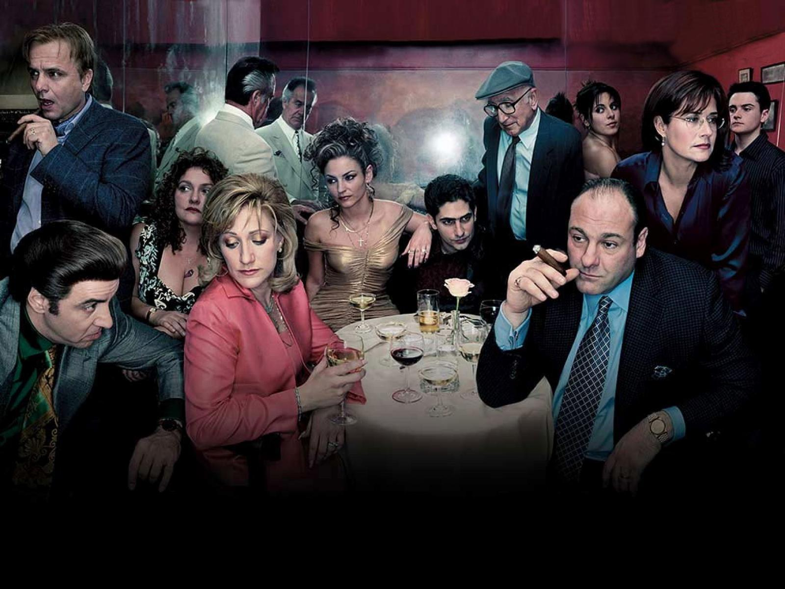

Introduccion
Los Soprano es una serie de drama/suspenso, la trama de la serie gira en torno al mafioso de Nueva Jersey Tony Soprano y las dificultades que enfrenta tanto en su hogar como en la organización criminal que dirige, y la historia de los personajes cercanos a Tony, especialmente su esposa Carmela y su sobrino y protegido Christopher Moltisanti.
"No creas nada de lo que oigas, ni la mitad de lo que veas" - Tony Soprano
